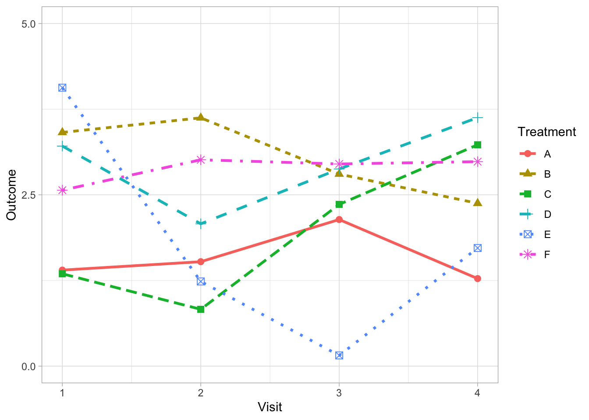

Clear lines, clear signal
line plot
symbols
clarity
Rcode
example
Weniger aber besser (Less but better) - Dieter Rams.
This post is based on the chapter “clean lines, clear signal” in the textbook by Dona Wong: “The Wall Street Journal Guide to Information Graphics: The Dos and Don’ts of Presenting Data, Facts, and Figures” (Wong 2010).
Often we are faced with the problem of presenting comparisons of longitudinal data over many groups (e.g., multiple treatment arms, subgroup categories or individual patient time courses). It is tempting to differentiate each line by fully utilising the array of dashes and shape markers that are available within our favorite software package.
But this often obscures the lines which carry the information thereby reducing clarity.
Weniger aber besser (Less but better) - Dieter Rams.
There are alternative strategies to address this problem depending on the purpose of your graph. For example, if it is possible to limit the number of comparison groups to four or less per graph then solid lines can be used exclusively. Varying weights and shades do the work of differentiating the lines removing the need for symbols and different line styles.
Direct labeling of each line can further support differentiation between groups when it is possible to apply without clashes (to the label positioning).

By using direct labelling we can go a step further and remove colour for differentiating between treatments without a lose in information.
The advantage of removing colour is that we can also add it back in to serve another purpose. In the next example, we introduce colour to highlight a specific treatment.
If it is not possible to limit the number of comparisons to four or less groups, consider using a panel of graphs (i.e. small multiple graphs on the same scale (Cleveland 1985; Tufte 1986)). This strategy allows all information to be presented on one graph, focusing each comparison of interest to a single panel.
The final example using small multiples allows the complete data to be displayed as well as facilitating comparisons between one treatment versus the others.
If any of this is useful, below is the code written in R for reproducing these plots used in this post along with the session information.
Code
library(tidyverse)
## Set global theme
theme_set(theme_light())
## Set seed for reproducibility
set.seed(65)
## Generate dummy data
df <- data.frame(
Treatment = rep(c("A", "B", "C", "D", "E", "F"),
each = 4),
Treatment2 = rep(c("A", "B", "C", "D", "E", "F"),
each = 4),
Visit = rep(c(1, 2, 3, 4), 6),
Outcome = c(
rnorm(4, 2, 0.5),
rnorm(4, 3, 0.5),
rnorm(4, 2, 1),
rnorm(4, 3, 0.5),
rnorm(4, 2.5, 1),
rnorm(4, 3, 0.2)
)
)
## Plot all six lines
df %>% ggplot(aes(x = Visit, y = Outcome, group = Treatment, color = Treatment)) +
geom_line(size = 1.1, aes(linetype = Treatment)) +
geom_point(size = 2.5, aes(shape = Treatment)) +
scale_x_continuous(limits = c(1, 4), breaks = c(1, 2, 3, 4)) +
scale_y_continuous(limits = c(0, 5), breaks = c(0, 2.5, 5))
## Plot only four lines
df %>%
filter(Treatment %in% c("A", "B", "C", "D")) %>%
ggplot(aes(x = Visit, y = Outcome, group = Treatment, color = Treatment)) +
geom_line(size = 1.2) +
scale_x_continuous(limits = c(1, 4), breaks = c(1, 2, 3, 4)) +
scale_y_continuous(limits = c(0, 5), breaks = c(0, 2.5, 5))
## Direct labels on plot
df %>%
filter(Treatment %in% c("A", "B", "C", "D")) %>%
ggplot(aes(x = Visit, y = Outcome, group = Treatment, color = Treatment)) +
geom_line(size = 1.2) +
scale_x_continuous(limits = c(1, 4), breaks = c(1, 2, 3, 4)) +
scale_y_continuous(limits = c(0, 5), breaks = c(0, 2.5, 5)) +
geom_text(
data = subset(df, Visit == "4" & (Treatment %in% c("A", "B", "C", "D"))),
aes(label = Treatment),
position = "nudge",
hjust = -0.5,
vjust = 0.5,
color = "black"
) +
theme(legend.position = "none")
## direct labels without colour
df %>%
filter(Treatment %in% c("A", "B", "C", "D")) %>%
ggplot(aes(x = Visit, y = Outcome, group = Treatment)) +
geom_line(size = 1.2, colour = "#000000", alpha = 0.8) +
scale_x_continuous(limits = c(1, 4), breaks = c(1, 2, 3, 4)) +
scale_y_continuous(limits = c(0, 5), breaks = c(0, 2.5, 5)) +
geom_text(
data = subset(df, Visit == "4" & (Treatment %in% c("A", "B", "C", "D"))),
aes(label = Treatment),
position = "nudge",
hjust = -0.5,
vjust = 0.5,
color = "black"
) +
theme(legend.position = "none")
## direct labels highlighting a specific treatment
df %>%
filter(Treatment %in% c("A", "B", "D")) %>%
ggplot(aes(x = Visit, y = Outcome, group = Treatment)) +
geom_line(size = 1.0, colour = "#000000", alpha = 0.45) +
geom_line(
data = transform(df %>% filter(Treatment == "C")),
aes(x = Visit, y = Outcome, group = Treatment2),
size = 1.2,
color = "red",
alpha = 0.8
) +
scale_x_continuous(limits = c(1, 4), breaks = c(1, 2, 3, 4)) +
scale_y_continuous(limits = c(0, 5), breaks = c(0, 2.5, 5)) +
geom_text(
data = subset(df %>% filter(Visit == "4", Treatment %in% c("A", "B", "C", "D"))),
aes(label = Treatment),
position = "nudge",
hjust = -0.5,
vjust = 0.5,
color = "black"
) +
theme(legend.position = "none")
## Small multiples plot
df %>%
ggplot(aes(x = Visit, y = Outcome, group = Treatment)) +
geom_line(
data = transform(df, Treatment = NULL),
aes(x = Visit, y = Outcome, group = Treatment2),
size = 0.8,
color = "#000000",
alpha = 0.25
) +
geom_line(size = 1.2, color = "red", alpha = 0.9) +
scale_x_continuous(limits = c(1, 4), breaks = c(1, 2, 3, 4)) +
scale_y_continuous(limits = c(0, 5), breaks = c(0, 2.5, 5)) +
facet_wrap( ~ Treatment) References
Cleveland, William S. 1985. The Elements of Graphing Data. Belmont, CA, USA: Wadsworth Publ. Co.
Tufte, Edward R. 1986. The Visual Display of Quantitative Information. Cheshire, CT, USA: Graphics Press.
Wong, Dona M. 2010. The Wall Street Journal Guide to Information Graphics: The Dos and Don’ts of Presenting Data, Facts, and Figures. W.W. Norton & Company. https://www.amazon.com/Street-Journal-Guide-Information-Graphics/dp/0393347281.